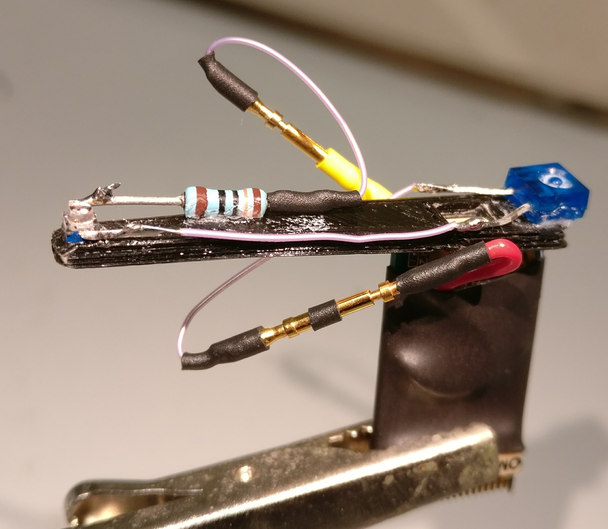
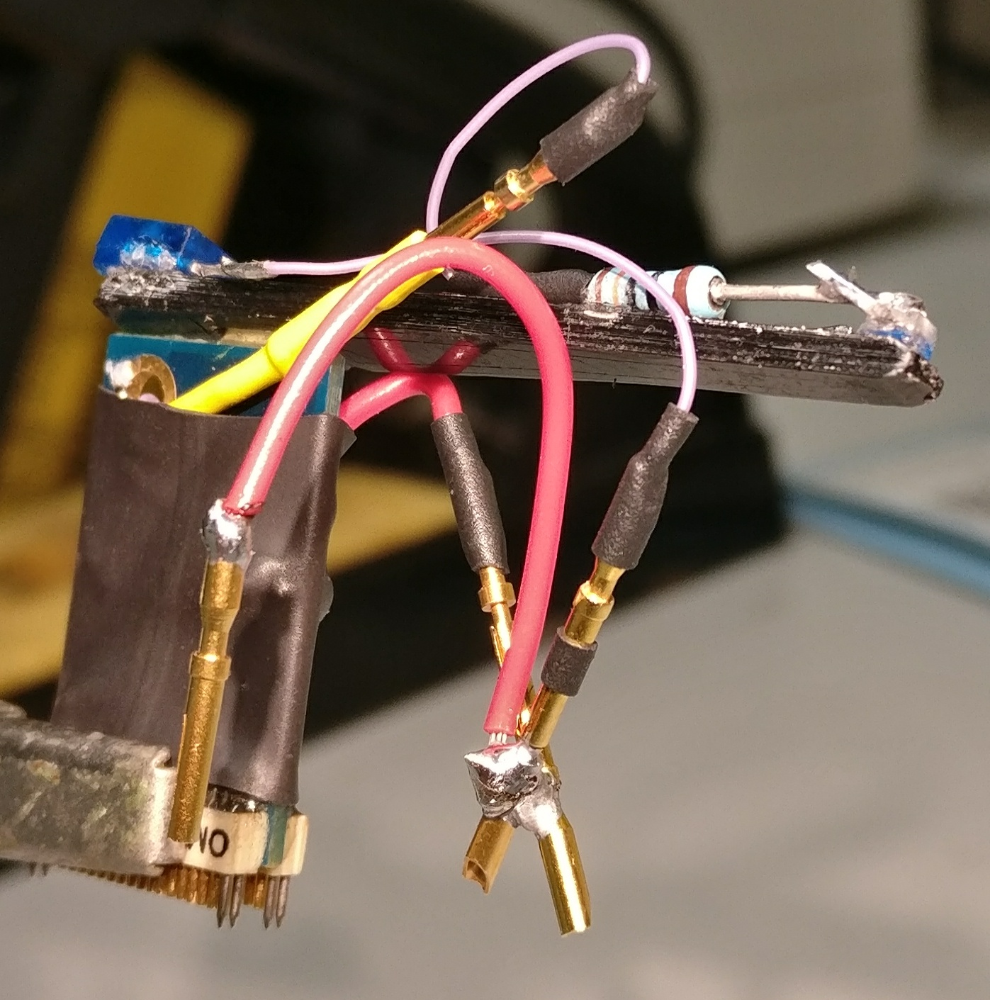

Recording PC setup for Data Acquisition¶
Setting up the Operating System¶
Install Ubuntu¶
This document is based on Ubuntu 16.04 LTS installation. Instructions can be found on Ubuntu website.
((During installation agree to using 3rd party repositories))
((Make sure you keep the option the ask for password on startup))
If the PC has multiple hard drives, then Ubuntu may put the boot loader (the thing that starts the Operating System) on a different hard drive than the one where Ubuntu files will be. To have control over this, you will need to use the option that also requires you to set up partitions manually. Preferably you would want to have the boot loader on the same drive as your Ubuntu installation. See below.
During installation you can also manually edit the partition sizes and have a separate partition for the Home folder. To do this, use the Something else option when the installation prompt asks how to set up the Disks. Use this guide manual partitioning for setting up the paritions. Here Primary Type option was used for all partitions and Swap was placed to the end of the drive.
Fix slow shutdown issue¶
This is an optional step, if this issue occurs with your PC setup. It may happen that after installation shutdown process is very slow, which you would notice as you restart your PC. In this case during shutdown, when you see Ubuntu loading logo, hit F12 on the keyboard. If over the next few minutes check if you see similar error messages to the following:
ata2.00: exception Emask 0x0 SAct 0x0 SErr 0x0 action 0x6 frozen
ata2.00: status: { DRDY}
ata2.00: revalidation failed (errno=-5)
If you see similar error messages, do the following to fix it (It is based on the 2nd solution in this post)
Open Dash and search for Software and Updates. Open Software and Updates -> Go to Developr Options -> Tick the box next to where it says Pre-released updates (xenial-proposed). It will promt you to Reload your sources, which you should do. After this Update the system. After restarting the computer again, this problem should no longer occur.
This is a temoporary fix. It could be a hardware configuration incompatibility with Ubuntu that will be permanently fixed in a future release.
Connect to the local network¶
It may be possible to connect to the local network automatically by connecting the PC to a network socket or simply by selecting a WiFi network.
If may be necessary to manually assign network settings. This can be done by editing /etc/network/interfaces with the terminal command sudo gedit /etc/network/interfaces. An example file will look like this:
# interfaces(5) file used by ifup(8) and ifdown(8)
auto lo
iface lo inet loopback
auto enp2s0
iface enp2s0 inet static
address 128.40.50.165
netmask 255.255.255.0
gateway 128.40.50.245
dns-nameservers 128.40.200.1 128.40.200.2 8.8.4.4 8.8.8.8
You can get the correct values for these numbers from the network administrator. The value enp2s0 here is the network adapter name. This is usually the first adapter in the output for the terminal commant ifconfig.
Update the system¶
Use the terminal commands:
sudo apt-get update # Fetches the list of available updates
sudo apt-get upgrade # Strictly upgrades the current packages
sudo apt-get dist-upgrade # Installs updates (new ones)
This should be done regularly as the machine is being used and especially before any major changes, such as installing new software or drivers.
Install additional drivers¶
You may be able to get the very latest drivers only from the website of your hardware manufacturer. E.g. for NVIDIA GPU drivers you should go to http://www.nvidia.com/Download/index.aspx?lang=en-us
Installing drivers, especially the latest ones for most up-to-date hardware can be challenging. The easier and minimal step for ensuring you have all necessary drivers available is to use Ubuntu built-in utility. To do this, open Dash (Windows start menu equivalent) and type in Additional Drivers. Open the tool that comes up and select the preferred drivers where possible and click Apply Changes.
((In the case of the PC which this readme is based on, the available NVIDIA driver was version 340.101, while NVIDIA website provided version 340.102. Since the difference is not likely to be so great, I used the Additional Drivers utility to update the graphics drivers.
Other useful steps¶
Setting up the programs described in this part is not necessary for taking recordings and doing preliminary analysis. However, they can be useful otherwise and following these guidelines should ensure that setting them up doesn’t interfere with the recording part of the system.
At the very least, you should install git and map a network drive to which to transfer the data.
Install git for using github¶
This program is essential for interfacing with github as well as installing some of the programs for using OpenEphys. Install git with terminal command sudo apt-get install git.
Connect to a network drive¶
Use this guide to mapping a network drive to map a network drive permanently.
Here are the steps using as an example a server named QNAP:
sudo apt-get install cifs-utils
sudo mkdir /media/QNAP
sudo gedit /etc/nsswitch.conf
Find the line looks like:
hosts: files mdns4_minimal [NOTFOUND=return] dns
change it into:
hosts: files mdns4_minimal [NOTFOUND=return] wins dns
Run below terminal command so that your Ubuntu can resolve Windows computer name on a DHCP network.
sudo apt-get install libnss-winbind winbind
Reboot Ubuntu
Enter your username and credentials into a text file .smbcredentials using gedit with terminal command gedit ~/.smbcredentials as follows:
username=enter_your_networkdrive_username_here
password=enter_your_networkdrive_password_here
Now get values for your gid and uid by typing into terminal id enter_your_pc_username_here. Use these values to edit fstab file by typing into terminal:
sudo cp /etc/fstab /etc/fstab_old
sudo gedit /etc/fstab
Add to the end of this file as a single line the following after modifying it to your configuration:
//192.168.1.5/share /media/QNAP cifs credentials=/home/enter_your_pc_username_here/.smbcredentials,iocharset=utf8,gid=1000,uid=1000,file_mode=0777,dir_mode=0777 0 0
192.168.1.5/data - should be replaced by the IP of your server and the shared folder if applicable.
/media/QNAP - should be replaced by the folder you created in the beginning of the network mapping tutorial.
credentials=/home/enter_your_pc_username_here/.smbcredentials - should be modified to include your username.
gid and uid values as you found using
id enter_your_username_here.
Save the file.
You can now mount the drive with terminal command:
sudo mount -a
This may need to be run each time you reboot.
Install Google Chrome¶
Download Chrome for Ubuntu from official website. Install by just double-clicking on the file and selecting install in the new window. This may not work, in which case you need to use an alternative Debian package manager, called GDebi. Install this with terminal command sudo apt-get install gdebi. Now right click on the file -> Open With -> GDebi Package Installer. Click on Install button.
You can open Google Chrome from the Dash. It can also be dragged to the side-bar.
Install Sublime Text 3 for editing scripts¶
Download the latest Ubuntu 64 bit version from Sublime Text website. Install by just double-clicking on the file and selecting install in the new window. This may not work, in which case you need to use an alternative Debian package manager, called GDebi. Install this with terminal command sudo apt-get install gdebi. Now right click on the file -> Open With -> GDebi Package Installer. Click on Install button.
Install Sphinx for editing ReadTheDocs files¶
Instructions are on Sphinx website.
Install using terminal command sudo apt-get install python-sphinx.
If you have already existing source files for documents you would like to edit, such as this one, you can simply copy the root directory to your PC and skip using
sphinx-quickstart.If you’d like to start creating brand new documents, then navigate to a folder where you would like to store the documents and run
sphinx-quickstartin terminal. Answer questions with default answers. (Be sure to say yes to the “autodoc” extension.)
In the root directory of your document scripts, run terminal command make html to update files in Build folder, where you can see the results by opening the index.html.
To use the Sphinx RTD Theme as in these docs, you may need to install it with the following terminal command pip install sphinx_rtd_theme.
Install QT Designer for editing GUIs¶
Install Qt4 and Qt4 Designer with the following terminal command:
sudo apt-get install python-qt4 pyqt4-dev-tools qt4-designer
Now you can edit the .ui files with QtDesigner by opening it from Dash, as you search for designer. Within the application you can open existing .ui files, edit and save them. You will then have to compile the .ui file to a python script using pyuic4. For example, if you had saved your design as design.ui, then you can use the following terminal command in the directory where your file is:
pyuic4 design.ui -o design.py
With the existing scripts, such as RecordingManager.py, the naming convention for the .ui and .py files is as in this example.
Turn off screen lock¶
To avoid interference with recordings, you might want to stop Ubuntu from automatically turning off the screen and locking it during periods of inactivity.
Open Dash and type Brightness & Lock and press Enter. Choose desired settings: e.g. Set “Turn screen off… ” setting to Never and un-select “Lock” settings.
Install convenient brightness controller¶
During experiments you may wish to reduce any excess illumination coming from the computer screen(s). Install Brightness Controller to tune screen brightness from inside Ubuntu, instead of using the monitor controls. To do this, use the following terminal commands:
sudo add-apt-repository ppa:apandada1/brightness-controller
sudo apt-get update
sudo apt-get install brightness-controller
Now you can open Dash and search for Brightness Controller. Click to open the application. To make it easily accessible, right click on it in the Launcher (windows taskbar equivalent) and select Lock to Launcher.
Install Open Ephys GUI¶
Instructions are also on the Open Ephys website. The exact steps I made are as follows:
Install Dependencies¶
OpenEphys plugin-GUI is being developed rapidly, and the latest developmental version maybe better than the used at the time of writing this ReadMe. This page is for the specific commit used and on which the instructions are based. The instructions should mostly work for later releases as well.
To install the latest version of plugin-GUI from OpenEphys github run the required scripts in your home folder:
mkdir Programs
cd Programs
mkdir OpenEphysGUI
cd OpenEphysGUI
# The below line should give you the latest developmental version
git clone -b development --single-branch https://github.com/open-ephys/plugin-GUI
cd plugin-GUI/Resources/Scripts
sudo ./install_linux_dependencies.sh
sudo cp 40-open-ephys.rules /etc/udev/rules.d
sudo service udev restart
cd ~/
Install More dependencies with terminal commands:
sudo apt-get install libtool pkg-config build-essential autoconf automake libudev0:i386
Install libsodium with terminal commands:
git clone git://github.com/jedisct1/libsodium.git
cd libsodium
./autogen.sh
./configure && make check
sudo make install
sudo ldconfig
cd ~/
Install More dependencies with terminal commands:
sudo apt-get install libxrandr-dev # To fix a compilation error in JUCE library
sudo apt-get install libzmq3-dev # ZeroMQ version 3 is required
sudo apt-get install libhdf5-serial-dev # HDF version 1.8.12, or higher, is required
Add the necessary third-party plugins to the ~/Programs/OpenEphysGUI/plugin-GUI/Source/Plugins folder. The necessary plugins are:
Each of the plugins github code contains a folder with the plugin name, e.g. VirtualRef and files with .cpp and .h endings in that folder. Copy that entire folder to plugin-GUI Plugin directory ~/Programs/OpenEphysGUI/plugin-GUI/Source/Plugins. As you compile the Open Ephys GUI Plugins following instructions below, these plugins will also be compiled and made accessible in the GUI.
Install Open Ephys¶
First you need to add some text to the code that compiles the main GUI and also the one that compiles the plug-ins. Open the first file with the terminal command gedit ~/Programs/OpenEphysGUI/plugin-GUI/Builds/Linux/Makefile. Find the place in the file, where CPPFLAGS are defined, such as:
CPPFLAGS := $(DEPFLAGS) -D "LINUX=1" -D "DEBUG=1" -D "_DEBUG=1" -D "JUCER_LINUX_MAKE_7346DA2A=1" -D "JUCE_APP_VERSION=0.4.1" -D
There should be 2 such occurances. They might not be exactly identical to this example, but CPPFLAGS := should definitely be there. Add -D "JUCE_DISABLE_NATIVE_FILECHOOSERS=1" to the list of CPPFLAGS. See the below for an example how the above code was changed:
CPPFLAGS := $(DEPFLAGS) -D "LINUX=1" -D "JUCE_DISABLE_NATIVE_FILECHOOSERS=1" -D "DEBUG=1" -D "_DEBUG=1" -D "JUCER_LINUX_MAKE_7346DA2A=1" -D "JUCE_APP_VERSION=0.4.1" -D
Save the edited Makefile and then also edit the Makefile.plugins file which you can open with the terminal command gedit ~/Programs/OpenEphysGUI/plugin-GUI/Builds/Linux/Makefile.plugins. Make the same changes.
You are now ready to compile Open Ephys. Do this with the following terminal commands:
cd ~/Programs/OpenEphysGUI/plugin-GUI/Builds/Linux/
make
make -f Makefile.plugins
Create a shortcut for OpenEphys application in the home folder. Use terminal command gedit ~/OpenEphysGUI to create the file and add these lines to the file to link it to the compiled application:
#!/bin/bash
cd ~/Programs/OpenEphysGUI/plugin-GUI/Builds/Linux/build
./open-ephys
Run this terminal command to make the file executable
chmod +x ~/OpenEphysGUI
You can now run Open Ephys GUI by opening the terminal (by default it starts in your home folder) and typing in command ./OpenEphysGUI.
Intan Headstage setup¶
Reference and Ground¶
By default, at least on the 64-channel headstage, the Ground and Reference are not shorted. This can be done manually by soldering a wire between the REF and GND pins on the headstage. This can also be achieved by connecting the two pins on the drive connector.
In case of two headstages connected with an adapter, they also share a Ground and a Reference. Therefore, there is no need to reference both headstages.
Install LEDs on Intan Headstage for tracking¶
The image below shows an Intan Headstage with an LED bar attached to it. The RED wire is connected to the Ground (note, this should be shorted to Reference), while the YELLOW wire is connected to VDD pin. In case of a 64-channel headstage the VDD can be accessed by soldering the wire to left side of C1 capacitor. The YELLOW wire leads through a 130 Ohm capacitor to a infrared LED. This is in turn connected to another infrared LED with lower luminance, which is then connected to the RED wire. The tracking and processing programs assume the LED with lower luminance rests on the animals head. This is because that one is more likely to be occluded by wires.
{kind=link}
The following image show the same LED setup, where an additional wire has been added to the connection between RED wire (Ground-Reference). This can be used to connect Reference channel on the headstage to a Reference Pin on the animal’s implant. This is not necessary if the implanted drive’s reference is wired to a reference screw in the animal’s skull.
Setup Recording PC for using Recording Manager¶
This part describes how to set up the Recording PC to use the custom Python scripts and GUI that interfaces with the Raspberry Pis and handles the Open Ephys data.
Install the dependencies for the scripts¶
Install the necessary packages with the following terminal commands:
sudo apt-get install python-qt4 python-dev python-pip python-scipy python-pygame python-psutil
sudo apt-get install python-opencv # Alternatively install from source, but not necessary
sudo pip install paramiko
sudo pip install pyzmq # This assumes you have already installed ZMQ for OpenEphys GUI
pip install h5py # This assumes you have already installed libhdf5-serial-dev for OpenEphys GUI
Additionally install pyqtgraph latest version from their website (Here 0.10.0-1 was used). Go to pyqtgraph website and download the latest version of Debian/Ubuntu package. Install it by right click on the downloaded .deb file -> Open With -> GDebi Package Installer. Click on Install button.
Create folder structure in the home folder with the following terminal commands:
cd ~/
mkdir RecordingData
cd RecordingData
mkdir RecordingManagerData
Obtain Barry-lab repository openEPhys_DACQ manually and place them it in your home folder in a folder of the same name, or run the following terminal command:
cd ~/
git clone https://github.com/Barry-lab/openEPhys_DACQ
You will need a github.com username and password that has access to the repository.
Make changes in the scripts to suit your PC¶
Open ~/openEPhys_DACQ/RecordingManager.py with text editor like SublimeText and edit the following lines in the RecordingManager class __init__ function:
# Set GUI environment
self.scripts_root = os.path.expanduser('~') + '/openEPhys_DACQ'
self.pt_root_folder.setPlainText(os.path.expanduser('~') + '/RecordingData')
self.file_server_path = '/media/qnap/room418'
, such that they would reflect the folder structure on your Recording PC. Note that os.path.expanduser('~') refers to your Home folder. If you set everything up as instructed in the documentation, nothing but file server path should need changing.
Similarly as you did for the OpenEphysGUI, you can create a shortcut for RecordingManager.py application in the home folder. Use terminal command gedit ~/RecordingManager to create the file and add these lines to the file:
#!/bin/bash
cd ~/openEPhys_DACQ
python RecordingManager.py
Run this terminal command to make the file executable
chmod +x ~/RecordingManager
You can now run RecordingManager.py by opening the terminal (by default it starts in your home folder) and typing in command ./RecordingManager.
Now the Recording PC is ready to use the Python scripts for managing Open Ephys recordings and Raspberry Pis, if the networking and Raspberry Pis are set up as well. To do this, follow this guide : Camera and GlobalClock Raspberry Pi setup.